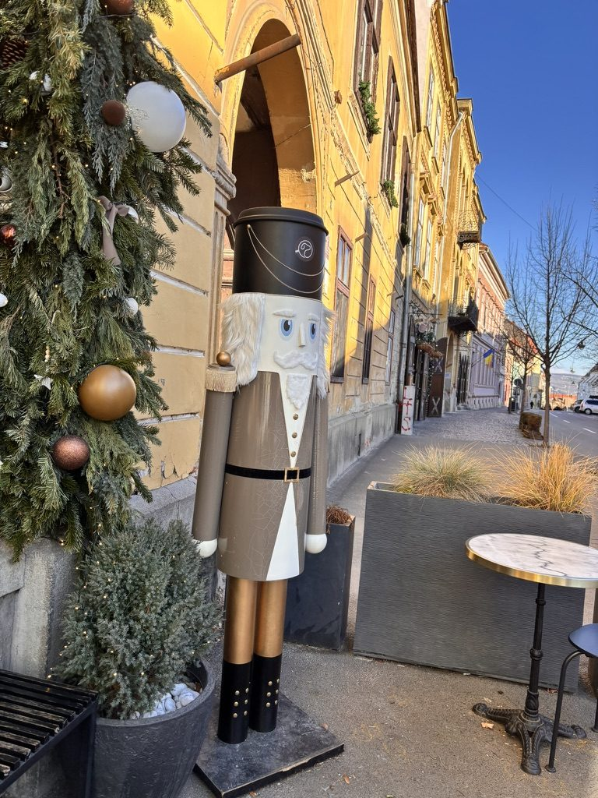
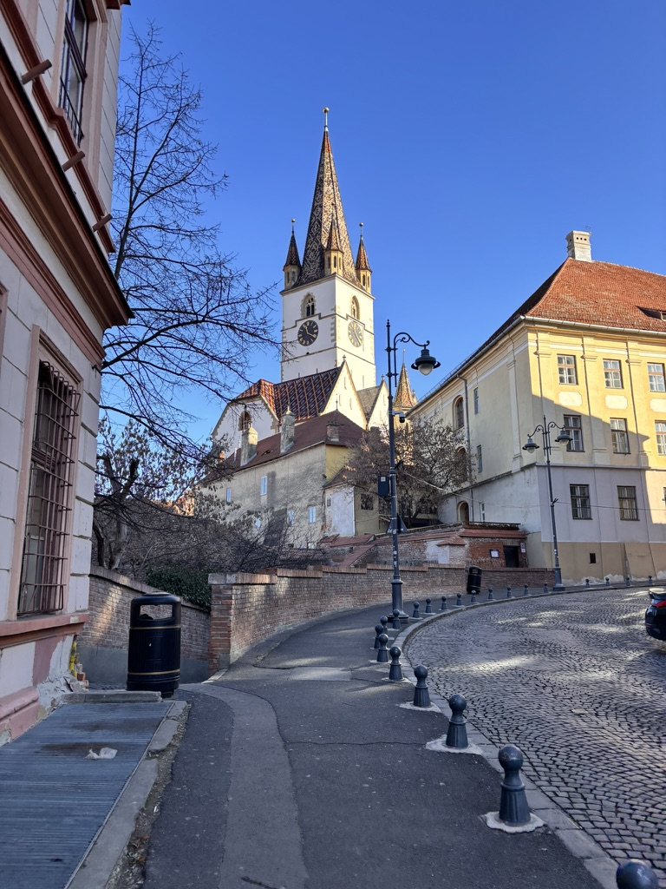
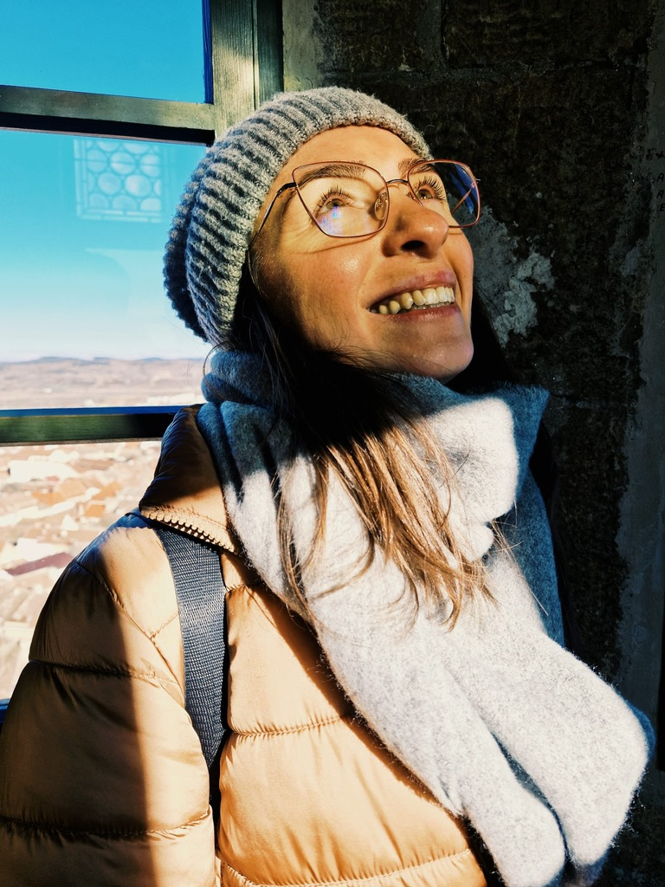
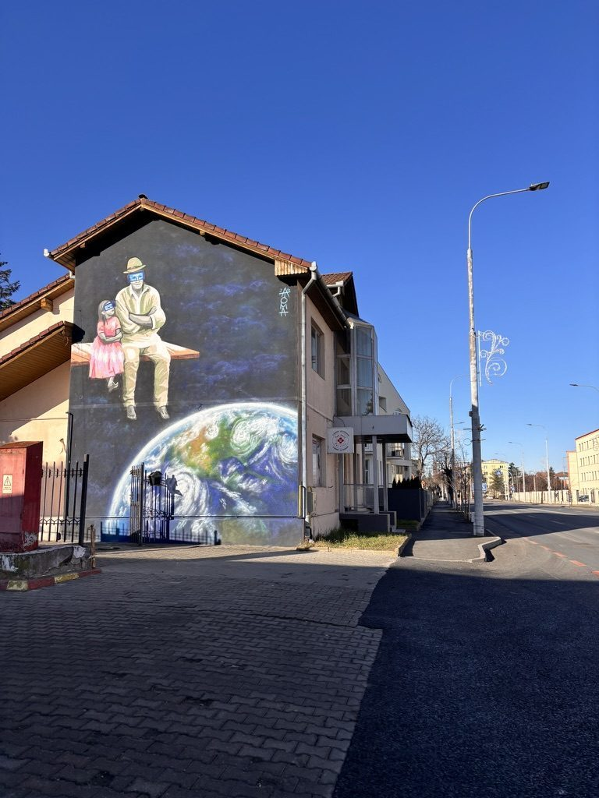
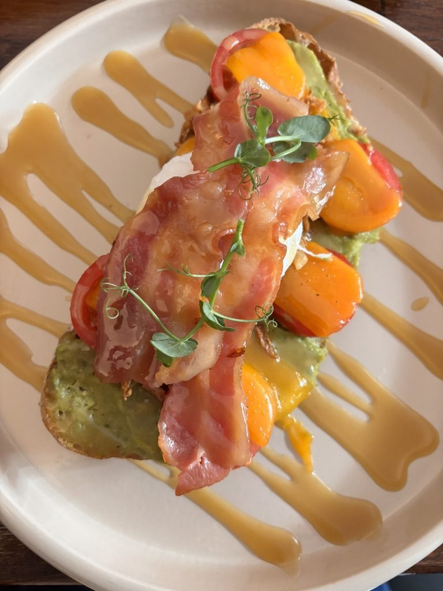
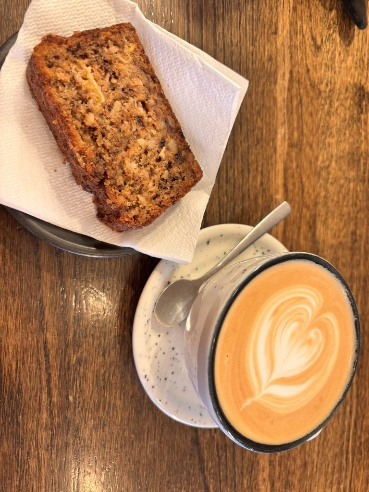
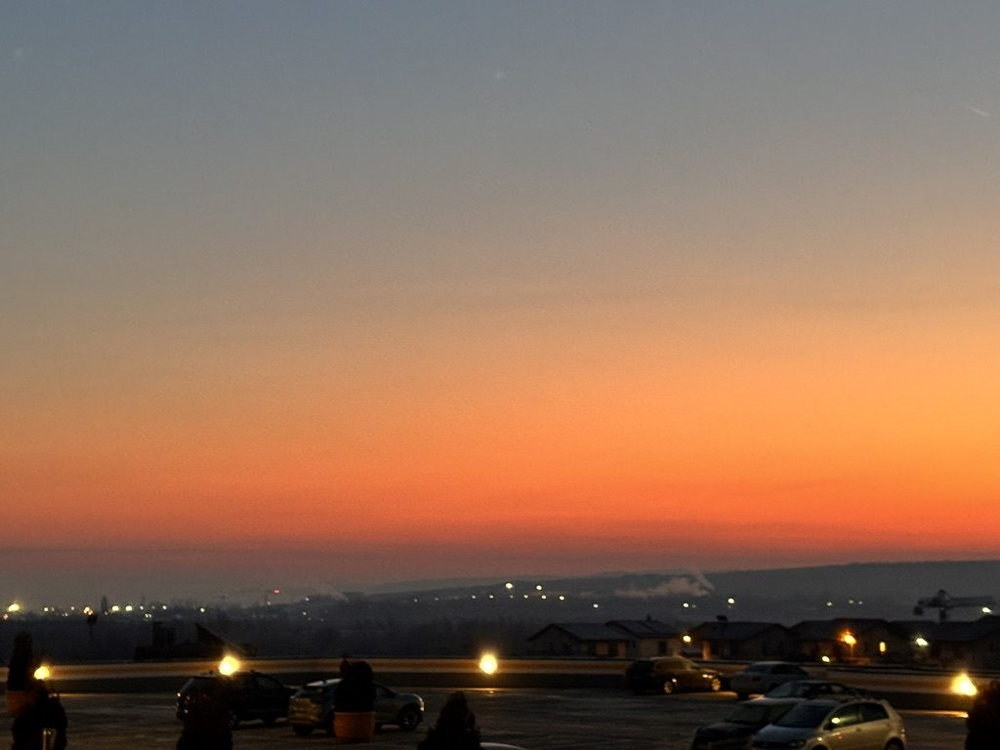

Sibiu is one of those cities that makes you wonder why you waited this long. It's three hours from Cluj — a drive I've done dozens of times past — and yet somehow it kept getting pushed to "next time." Then one Friday I just went.

Sibiu says hello properly.
The first thing that hits you about the old town is the rooftops. Sibiu is known for them — dormer windows shaped like half-lidded eyes, watching the squares below. Once you notice them you can't unsee them. The city has been staring at visitors for eight centuries and it's very good at it.
I parked and walked straight into the Upper Town without a plan. The squares here — Piața Mare, Piața Mică — are as good as any I've stood in anywhere in Europe. Clean stone, coloured facades, outdoor tables. A place that knows what it is and isn't trying to be anything else.
The uphill parts

Every day is leg day in Sibiu.
Sibiu is not flat. The old town splits into an Upper Town and a Lower Town, connected by steep cobbled streets, staircases, and an 800-year-old bridge with a view that stops you mid-stride. The lower town is quieter, less photographed, more lived-in — laundry strung between windows, cats on windowsills, the smell of lunch from somewhere.
If you're coming from a flat city you'll feel it in your calves by early afternoon. Coming from Cluj, I was fine. The mountains have their uses.
The towers

Happy for another day. Another tower.
There are multiple towers you can climb in Sibiu. Some are free, some charge a few lei, all of them are worth the narrow spiral staircase. You come out onto a parapet and suddenly the whole city opens below you — the red rooftops, the watching eyes, the squares you just walked through.
And behind it all, if the sky is clear, the Făgăraș mountains.

The Făgăraș ridge from the towers. Romania does this without warning.
The Făgăraș is the highest mountain range in Romania — serious, alpine, snow-capped well into spring. Seeing it from a medieval tower over terracotta rooftops is one of those views that makes you sit down somewhere and not say anything for a while. The combination of layers — city, plain, mountain — shouldn't work as well as it does.
The street art

Sibiu's walls have opinions.
What surprised me was the street art. Not what you expect from a medieval Transylvanian city, but Sibiu has been doing the work — murals appear on walls throughout the older streets, particularly in the lower town. Good ones. Not just tags or throw-ups but proper pieces, painted with intention, sitting unexpectedly well against eight-hundred-year-old stone.
I spent longer in those alleys than I planned to. That's a consistent feature of Sibiu — it keeps offering you reasons to stay ten more minutes.
The eating

Brunch lover, forever and without apology.
Sibiu eats well. The café scene here punches above a city of its size — independent places, proper coffee, food made with some care. I did a brunch that took longer than intended and zero regrets. A table by the window, good eggs, the kind of unhurried morning that city breaks are supposed to provide but rarely do.

Delight Café. The banana bread is not a rumour.
Later, banana bread at a small café near the main square. I don't usually order banana bread. This one changed my position on the matter. Dense, warm, the kind of thing you eat slowly because you don't want it to end. The café was quiet and had good light and I sat there for longer than was technically necessary.
The cathedral at night

The cathedral after dark. The square empties and it becomes something else.
Sibiu at night is different from Sibiu in the day. The tourist foot traffic thins out, the squares belong to locals and a few late walkers. The Evangelical Cathedral of Sibiu — the largest Lutheran church in Romania, built in the 14th century — sits in the main square and is impressive in daylight. At night, lit from below against a dark blue sky, it becomes something more than impressive.
I stood in front of it for a while. The square was almost empty. The watching eyes on the rooftops were closed for the night.
The drive home

The drive home. Sting on. No notes.
I left later than I meant to, which meant I drove home into a sunset. The sky over the Transylvanian plain went through several shades of orange and pink that I don't have precise words for. I had Sting on — Fields of Gold, inevitably, and then a few other things — and the light through the windscreen was the kind that makes you feel like you're inside a film.
There's something about a road trip alone where the ending is as good as the destination. The drive back from Sibiu was one of those. The city had been good. The banana bread had been very good. The sunset asked nothing from me except to drive slowly and pay attention.
I'll go back in winter, when the squares are empty and the towers are cold and the Făgăraș is under proper snow. Sibiu has more to show me and I'm willing to return for it.